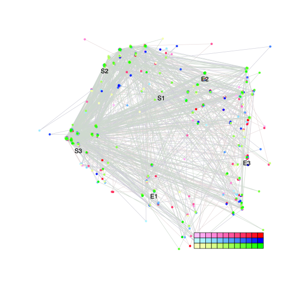
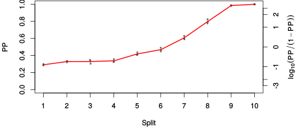
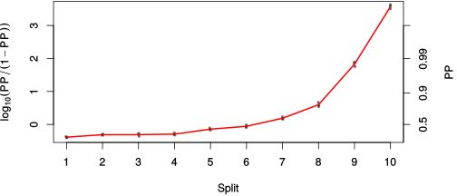

| chain # | burnin | subsample | Iterations (remaining) | command line | subdirectory | directory |
|---|---|---|---|---|---|---|
| 1 | 10000 | 1 | 90000 | /usr/local/bali-phy-3.0-beta2/bin/bali-phy E7_AA_red3_all4Manatees_BetaGamma.fas -s 21543 -n E7_red3_all4Manatees_BetaGamma_c1 | E7_red3_all4Manatees_BetaGamma_c1-1 | /home/willemse/data/trees/BaliPhy/E7 |
| 2 | 10000 | 1 | 90000 | /usr/local/bali-phy-3.0-beta2/bin/bali-phy E7_AA_red3_all4Manatees_BetaGamma.fas -s 62324 -n E7_red3_all4Manatees_BetaGamma_c2 | E7_red3_all4Manatees_BetaGamma_c2-1 | /home/willemse/data/trees/BaliPhy/E7 |
| 3 | 10000 | 1 | 90000 | /usr/local/bali-phy-3.0-beta2/bin/bali-phy E7_AA_red3_all4Manatees_BetaGamma.fas -s 72931 -n E7_red3_all4Manatees_BetaGamma_c3 | E7_red3_all4Manatees_BetaGamma_c3-1 | /home/willemse/data/trees/BaliPhy/E7 |
| P(data|M) = -2238.151 +- 0.197 | Complete sample: 1034 topologies | 95% Bayesian credible interval: 219 topologies |
Phylogeny Distribution

| Partition support: Summary |
| Partition support graph: SVG |
{kind=link}
| 50% consensus | Newick (+PP) | SVG | |||||
| 66% consensus | Newick (+PP) | SVG | |||||
| 80% consensus | Newick (+PP) | SVG | |||||
| 90% consensus | Newick (+PP) | SVG | |||||
| 95% consensus | Newick (+PP) | SVG | |||||
| 99% consensus | Newick (+PP) | SVG | |||||
| 100% consensus | Newick (+PP) | SVG | |||||
| MAP | Newick (+PP) | SVG | |||||
| greedy | Newick (+PP) | SVG |
{kind=link}
{kind=link}
{kind=link}
{kind=link}
{kind=link}
{kind=link}
{kind=link}
{kind=link}
Alignment Distribution
Partition 1
| Diff | Min. %identity | # Sites | Constant | Informative | ||||
|---|---|---|---|---|---|---|---|---|
| Initial | FASTA | HTML | Diff | 3.45% | 117 | 1 (0.855%) | 88 (75.2%) | |
| Best (WPD) | FASTA | HTML | AU | 15.3% | 175 | 9 (5.14%) | 76 (43.4%) |
Mixing
{kind=link}
{kind=link}
| burnin (scalar) | ESS (scalar) | ESS (partition) | ASDSF | MSDSF | PSRF-CI80% | PSRF-RCF |
|---|---|---|---|---|---|---|
| 864 | 1835 | 1597.003 | 0.012 | 0.024 | 1.001 | 1.007 |
Projection of RF distances for the first 3 chains3D | Variation of split PPs across chains |
Scalar variables
| Statistic | Median | 95% BCI | ACT | ESS | burnin | PSRF-CI80% | PSRF-RCF |
|---|---|---|---|---|---|---|---|
| prior | -240.9 | (-293.8, -196) | 87.3 | 3092 | 345 | 1 | 1.002 |
| prior_A1 | -235.9 | (-287.4, -193.5) | 90.77 | 2974 | 312 | 1 | 1 |
| likelihood | -2215 | (-2239, -2188) | 55.49 | 4865 | 235 | 1 | 1.005 |
| logp | -2456 | (-2497, -2421) | 62.91 | 4291 | 463 | 0.9999 | 1 |
| Heat.beta | 1 | ||||||
| Scale1 | 5.439 | (2.925, 8.947) | 1.051 | 256930 | 152 | 1 | 0.9996 |
| S1.F.pi.A | 0.05555 | (0.0389, 0.07428) | 8.127 | 33221 | 378 | 1 | 0.9989 |
| S1.F.pi.R | 0.06643 | (0.04621, 0.08859) | 8.662 | 31170 | 398 | 1 | 1.002 |
| S1.F.pi.N | 0.03428 | (0.0216, 0.04881) | 10.53 | 25638 | 268 | 0.9999 | 1 |
| S1.F.pi.D | 0.05023 | (0.03416, 0.06806) | 10.48 | 25766 | 331 | 0.9997 | 1.001 |
| S1.F.pi.C | 0.04701 | (0.02793, 0.06846) | 8.563 | 31530 | 361 | 1 | 0.9979 |
| S1.F.pi.Q | 0.05386 | (0.03832, 0.0705) | 8.331 | 32408 | 336 | 0.9999 | 1.003 |
| S1.F.pi.E | 0.08347 | (0.06165, 0.1077) | 10.74 | 25150 | 607 | 1 | 0.9947 |
| S1.F.pi.G | 0.07222 | (0.04893, 0.09826) | 8.296 | 32547 | 359 | 0.9999 | 1.006 |
| S1.F.pi.H | 0.0296 | (0.01677, 0.04439) | 8.764 | 30808 | 483 | 0.9996 | 1.003 |
| S1.F.pi.I | 0.04723 | (0.03176, 0.06471) | 10.22 | 26423 | 270 | 1 | 0.9951 |
| S1.F.pi.L | 0.08323 | (0.05993, 0.1088) | 10.65 | 25354 | 471 | 1 | 1.003 |
| S1.F.pi.K | 0.02748 | (0.01623, 0.04093) | 8.376 | 32235 | 369 | 0.9996 | 1.006 |
| S1.F.pi.M | 0.004293 | (0.0008513, 0.009267) | 8.764 | 30809 | 286 | 1.001 | 0.999 |
| S1.F.pi.F | 0.04209 | (0.02589, 0.0609) | 8.355 | 32315 | 601 | 1 | 1.004 |
| S1.F.pi.P | 0.05884 | (0.0377, 0.08084) | 10.84 | 24909 | 542 | 1 | 0.9999 |
| S1.F.pi.S | 0.06301 | (0.0456, 0.08234) | 8.256 | 32702 | 385 | 1 | 1.003 |
| S1.F.pi.T | 0.05201 | (0.03567, 0.07075) | 8.232 | 32797 | 263 | 1 | 1.001 |
| S1.F.pi.W | 0.003786 | (0.0001307, 0.01078) | 9.662 | 27944 | 487 | 1 | 1.003 |
| S1.F.pi.Y | 0.03979 | (0.02392, 0.0583) | 8.4 | 32143 | 392 | 0.9997 | 1.005 |
| S1.F.pi.V | 0.07497 | (0.05672, 0.09525) | 8.273 | 32636 | 299 | 1 | 0.9935 |
| I1.RS07.meanIndelLengthMinus1 | 1.945 | (0.995, 3.244) | 20.46 | 13197 | 175 | 0.9998 | 1 |
| I1.RS07.logLambda | -3.734 | (-4.181, -3.261) | 35.43 | 7620 | 239 | 1 | 1.004 |
| |A1| | 160 | (146, 178) | 147.2 | 1834 | 864 | 0.913 | 1.005 |
| #indels1 | 32 | (25, 41) | 85.67 | 3151 | 232 | 0.9091 | 1.001 |
| |indels1| | 92 | (72, 117) | 91.16 | 2961 | 673 | 0.9677 | 0.9958 |
| #substs1 | 411 | (393, 426) | 107.1 | 2520 | 791 | 0.9265 | 1.007 |
| Scale1*|T| | 6.738 | (5.907, 7.593) | 12.74 | 21187 | 186 | 0.9998 | 1.004 |
| |A| | 160 | (146, 178) | 147.2 | 1834 | 864 | 0.913 | 1.005 |
| #indels | 32 | (25, 41) | 85.67 | 3151 | 232 | 0.9091 | 1.001 |
| |indels| | 92 | (72, 117) | 91.16 | 2961 | 673 | 0.9677 | 0.9958 |
| #substs | 411 | (393, 426) | 107.1 | 2520 | 791 | 0.9265 | 1.007 |
| |T| | 1.24 | (0.6615, 1.977) | 1 | 270003 | 123 | 0.9999 | 0.9988 |